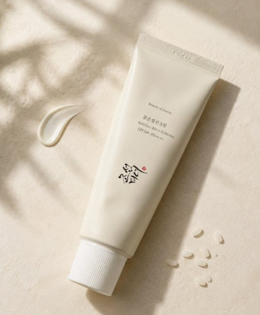
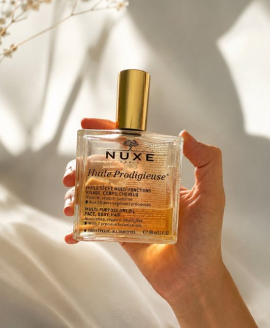
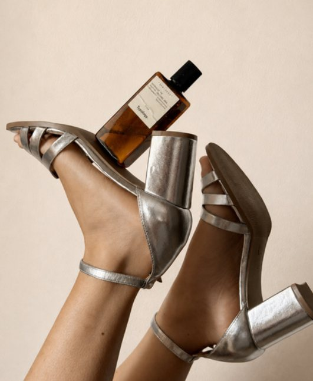
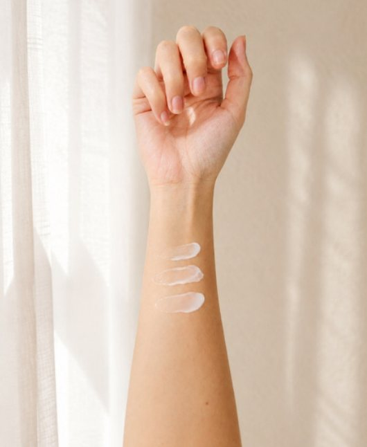
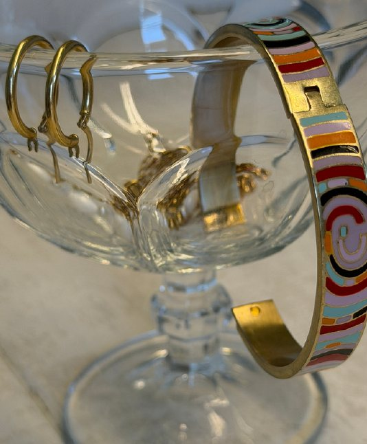
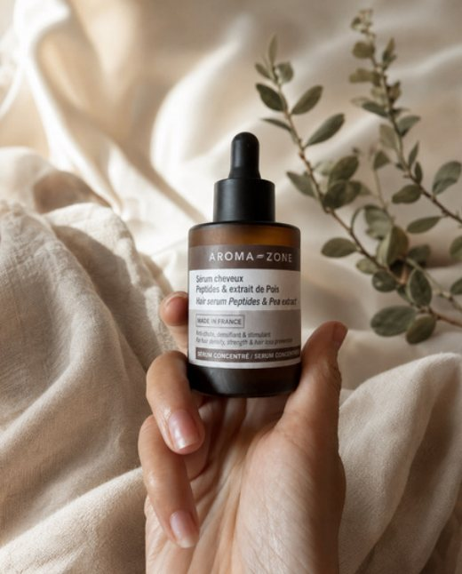
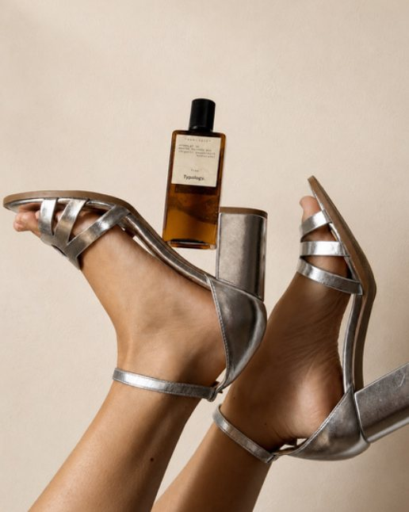
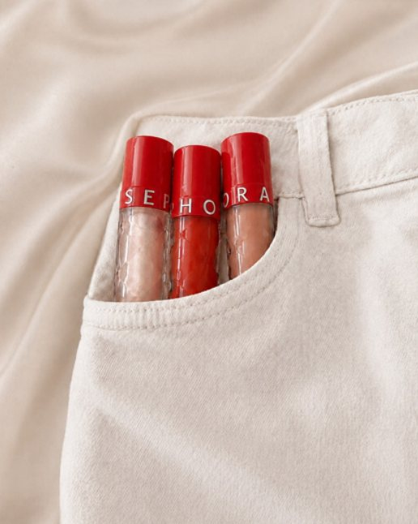
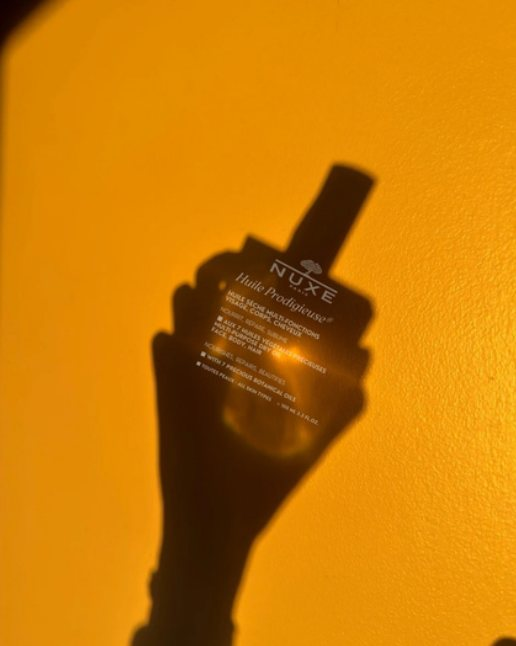
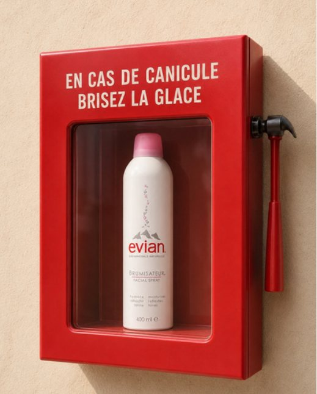

Une sélection de recherches visuelles, concepts ponctuels et expérimentations développés autour de différents univers de marque.










Projets spéculatifs — non commandés par les marques.